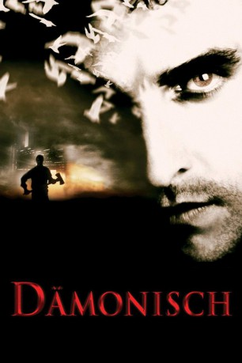
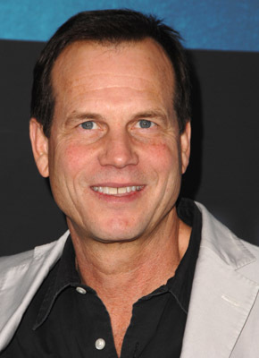
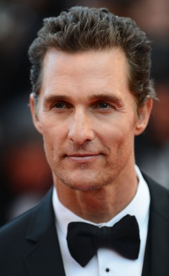
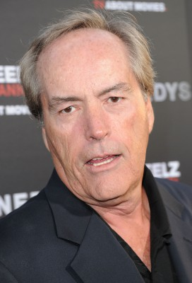
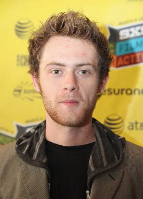
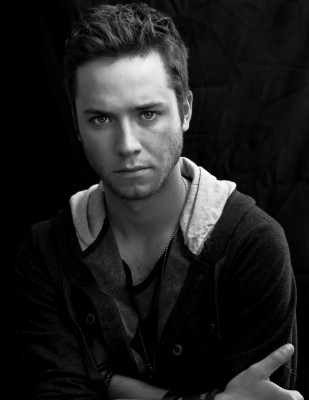
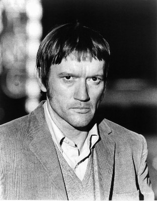
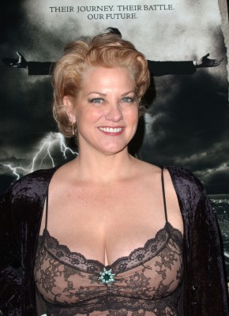
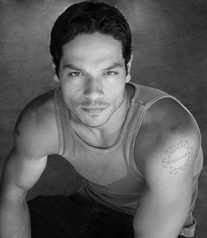
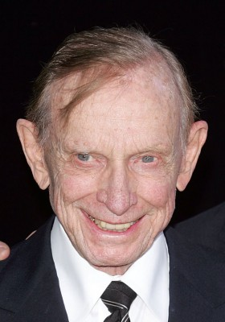

#1897 Dämonisch
Alternativ: Frailty
 
 IMDB-Wertung: 7.3 / 10
IMDB-Wertung: 7.3 / 10  Metascore: 64
Metascore: 64 
Das FBI fahndet fieberhaft nach einem Serienkiller, der sich "God's Hands" nennt. Eines Tages taucht Fenton Meeks auf und berichtet dem FBI von seinem Bruder Adam, der der gesuchte Killer sein soll. In ihrer Kindheit hatten Fenton und Adam unter ihrem fanatisch-religiösen Vater zu leiden gehabt, der sich dazu berufen glaubte, in Gottes Namen all jene zu töten, die von Dämonen besessen seien. Während Fenton die Taten seines Vaters anzweifelte und hinterfragte, sah Adam in ihm einen Helden...
Jahr: 2001
Dauer: 100 Minuten
FSK: 18
Land: USA Studio: Lions Gate FilmsTonspuren: DD5.1 - ,
Untertitel: Englisch,
Auflösung: 720p (1280x720) Größe: 4792 MB
Genre: Thriller, Drama, Krimi
Regisseur:  Bill Paxton
Bill Paxton
Drehbuch: Brent Hanley
Soundtrack: Brian Tyler
Darsteller:
-  Bill Paxton als Dad Meiks
-  Matthew McConaughey als Fenton Meiks
-  Powers Boothe als FBI Agent Wesley Doyle
-  Matt O'Leary als Young Fenton
-  Jeremy Sumpter als Young Adam
-  Luke Askew als Sheriff Smalls
- Levi Kreis als Fenton Meiks
- Derk Cheetwood als Agent Griffin Hull
- Missy Crider als Becky Meiks
-  Cynthia Ettinger als Cynthia Harbridge
- Gwen McGee als Operator
- Rebecca Tilney als Teacher
- Brad Berryhill als Teenage Demon
-  Greg Serano als FBI Agent #1
- Edgar L. Davis als FBI Agent #2
- Lance E. Nichols als FBI Agent #4
-  John Paxton als Janitor in Lobby
- Ona Harris als Townswoman
- Alan Davidson als Brad White
- Vincent Chase als Edward March
- Edmond Scott Ratliff als The Angel
- Blake King als Eric
- Jim Flowers als FBI Agent #3
- Richard A. Bell als Curtis
- Chelsea Butler als Little Girl
- Jennifer Drake als Teacher's Aide
- Betty Gurule als Doyle's Mother
Datei: X:\2001\Dämonisch (2001, FSK18, 1280x720).mkv seit 01.09.2015
Festplatte: HD 1996-2002
 Es gibt insgesamt 102 Filme in der Gruppe '2001'
Es gibt insgesamt 102 Filme in der Gruppe '2001'